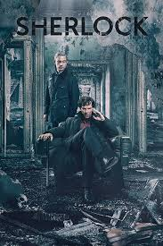
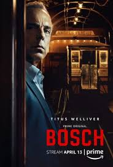

MYSTERY
Sherlock (2010- )
"The Game is on."

In this modernized version of the Conan Doyle characters, using his detective plots, Sherlock Holmes lives in early 21st century London and acts more cocky towards Scotland Yard's detective inspector Lestrade because he's actually less confident. Doctor Watson is now a fairly young veteran of the Afghan war, less adoring and more active
Genres : Crime,Drama,Thriller
No. of Seasons: 4
Available on Netflix
Review: 9.1/10 ⭐
Money Heist (2017- )
"In this World, everything is Governed by Balance. There's what you stand to Gain and what you stand to Lose. And when you think you've got Nothing to Lose, you become Overconfident."
Eight thieves take hostages and lock themselves in the Royal Mint of Spain as a criminal mastermind manipulates the police to carry out his plan. An unusal grup of robbers attempt to carry out the most perfect robbery in Spain history - stealing 2.4 billiob Euros from the Royal Mint of Spain.
Genres : Action,Crime,Drama
No. of Seasons: 4
Available on Netflix
Review: 8.4/10 ⭐
Bosch (2014- )
"Every murder tells the tale of a city."

Harry Bosch is an irreverent homicide detective in Los Angeles. Like any good protagonist he has problems with authority, follows his gut and bends a few rules while achieving the best solved case rate in all of California. Whatever situations the writers put him into he will undoubtedly be entertaining as he pursues justice.
Genres : Crime,Drama,Thriller
No. of Seasons: 5
Available on Amazon Prime
Review: 8.4/10 ⭐
The Mentalist (2008-2015)
"He reads between the lies."

Patrick Jane is a crime consultant with the California Bureau of Investigation. He has a particular gift for astute observation and reading people, honed through years of being a faux psychic. His gift makes him brilliant at solving murders, which is why the CBI have him around. However, his motive for taking on the role is purely one of revenge: find and kill the man who killed his wife and daughter
Genres : Crime,Drama,Thriller
No. of Seasons: 7
Available on Amazon Prime
Review: 8.1/10 ⭐
13 Reasons Why (2017- )
"If you are listening, you're too late."

Based on Caroline Kepnes' best-selling novel of the same name, YOU is a 21st century love story that asks, "What would you do for love?" When a brilliant bookstore manager crosses paths with an aspiring writer, his answer becomes clear: anything. Using the internet and social media as his tools to gather the most intimate of details and get close to her, a charming and awkward crush quickly becomes obsession as he quietly and strategically removes every obstacle - and person - in his way.
Genres : Drama,Thriller
No. of Seasons: 3
Available on Netflix
Review: 7.8/10 ⭐
Elite (2018- )
"Till death do us part."

Las Encinas is the most exclusive school in the country- where the Elite sends their children to study. In there, three working-class teens have just been admitted after an earthquake destroyed their school. The clash between those who have everything and those who have nothing to lose creates a perfect storm that ends in a murder. Who committed the crime?
Genres : Crime,Drama,Thriller
No. of Seasons: 3
Available on Netflix
Review: 7.6/10 ⭐
Back